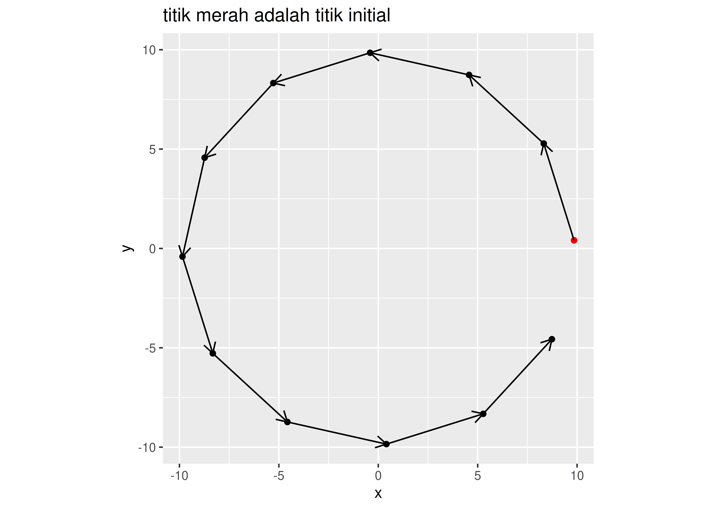
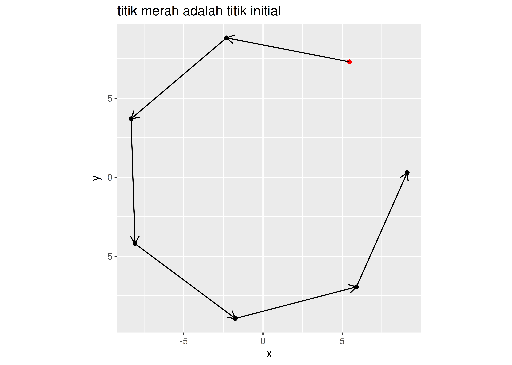
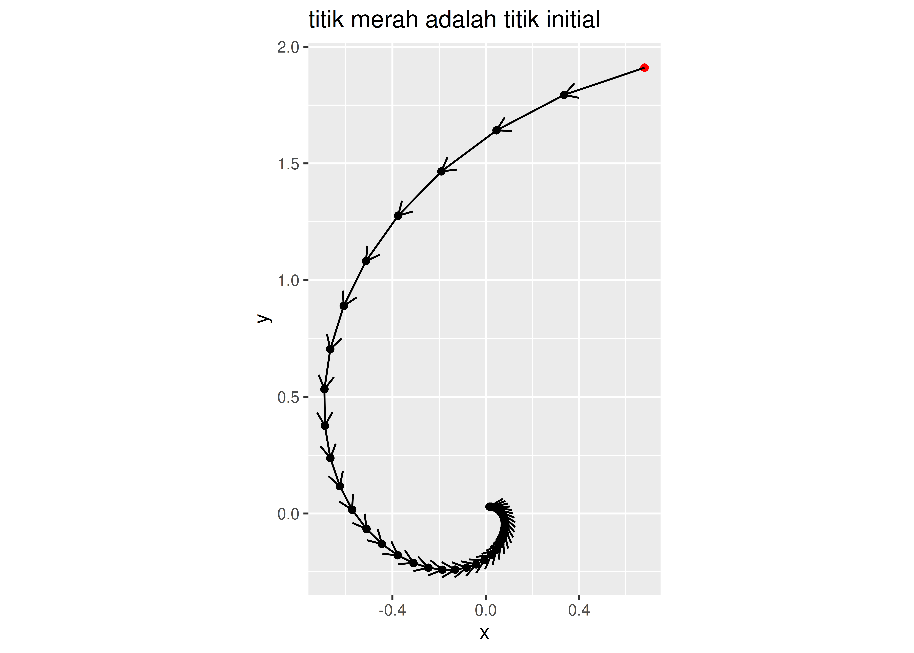
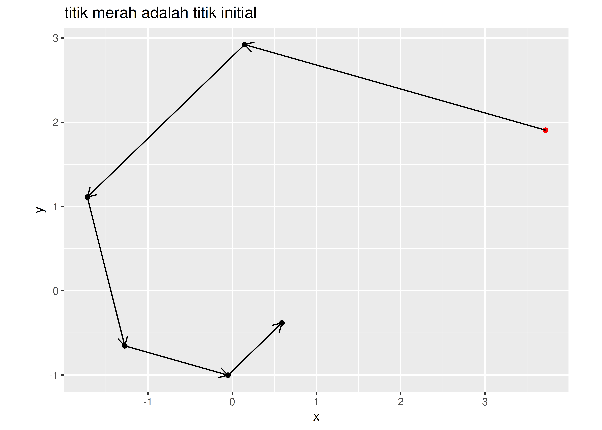
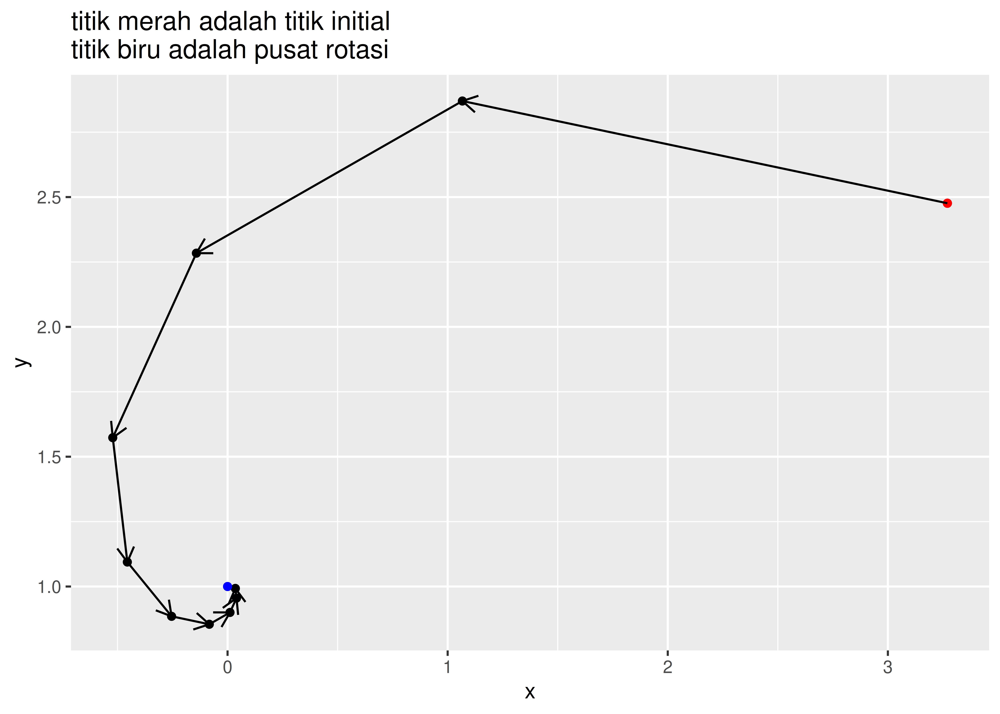
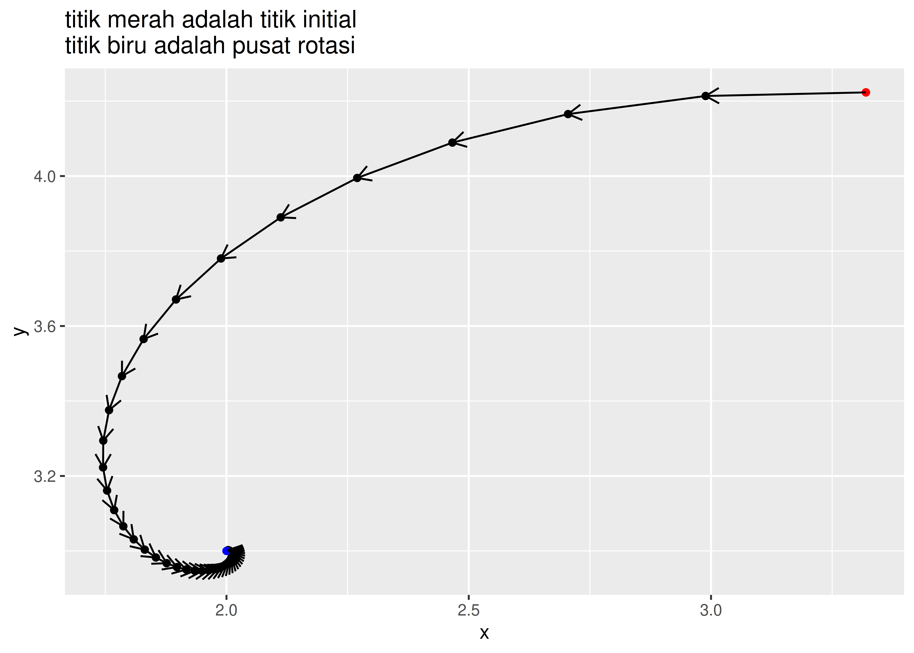

# mendefinisikan program
rotasi_kan = function(x0,rot){
# menghitung theta
theta = 2*pi/rot
# definisi matriks rotasi
A = matrix(c(cos(theta),-sin(theta),
sin(theta),cos(theta)),
ncol = 2,byrow = T)
# membuat template
temp = vector("list")
temp[[1]] = x0
# proses rotasi
for(i in 2:rot){
xk = A %*% x0
temp[[i]] = xk
x0 = xk
}
# membuat template data frame
final = data.frame(x = rep(NA,rot),
y = rep(NA,rot))
# gabung data dari list
for(i in 1:rot){
tempura = temp[[i]]
final$x[i] = tempura[1]
final$y[i] = tempura[2]
}
# membuat plot
plot =
ggplot() +
geom_point(aes(x,y),data = final) +
geom_point(aes(x[1],y[1]),
data = final,
color = "red") +
coord_equal() +
labs(title = "titik merah adalah titik initial")
# enrich dengan garis panah
panah = data.frame(
x_start = final$x[1:(rot-1)],
x_end = final$x[2:rot],
y_start = final$y[1:(rot-1)],
y_end = final$y[2:rot]
)
# menambahkan garis panah ke plot
plot =
plot +
geom_segment(aes(x = x_start,
xend = x_end,
y = y_start,
yend = y_end),
data = panah,
arrow = arrow(length = unit(.3,"cm"))
)
# menyiapkan output
list("Grafik rotasi" = plot,
"Titik-titik rotasi" = final)
}6 SPIRAL OPTIMIZATION ALGORITHM
Spiral Optimization Algorithm adalah salah satu metode meta heuristic yang digunakan untuk mencari minimum global dari suatu sistem persamaan.
Algoritmanya mudah dipahami dan intuitif tanpa harus memiliki latar keilmuan tertentu. Proses kerjanya adalah dengan melakukan random number generating pada suatu selang dan melakukan rotasi sekaligus kontraksi dengan titik paling minimum pada setiap iterasi sebagai pusatnya.
Berikut adalah algoritmanya:
INPUT
m >= 2 # jumlah titik
theta # sudut rotasi (0 <= theta <= 2pi)
r # konstraksi
k_max # iterasi maksimum
PROCESS
1 generate m buah titik secara acak
x_i
2 initial condition
k = 0 # untuk keperluan iterasi
3 cari x_* yang memenuhi
min(f(x_*))
4 lakukan rotasi dan konstraksi semua x_i
x_* sebagai pusat rotasi
k = k + 1
5 ulangi proses 3 dan 4
6 hentikan proses saat k = k_max
output x_*Berdasarkan algoritma di atas, salah satu proses yang penting adalah melakukan rotasi dan konstraksi terhadap semua titik yang telah di-generate.
Agar memudahkan penjeasan, saya akan memberikan ilustrasi geometri beserta operasi matriks aljabar terkait kedua hal tersebut.
Berikut adalah langkah-langkah yang ditempuh:
- Pertama saya akan membuat program yang bisa merotasi suatu titik berdasarkan suatu \(\theta\) tertentu.
- Kedua saya akan memodifikasi program tersebut untuk melakukan rotasi sekaligus konstraksi dengan rasio \(r\) tertentu.
- Ketiga saya akan memodifikasi program tersebut untuk melakukan rotasi sekaligus konstraksi dengan titik pusat rotasi tertentu.
6.1 Ilustrasi Geometris
6.1.1 Operasi Matriks Rotasi
Misalkan saya memiliki titik \(x \in \mathbb{R}^2\). Untuk melakukan rotasi sebesar \(\theta\), saya bisa menggunakan suatu matriks \(A_{2 \times 2}\) berisi fungsi-fungsi trigonometri sebagai berikut:
\[\begin{bmatrix} x_1 (k+1) \\ x_2 (k+1) \end{bmatrix} = \begin{bmatrix} \cos{\theta} & -\sin{\theta} \\ \sin{\theta} & \cos{\theta} \end{bmatrix} \begin{bmatrix} x_1 (k) \\ x_2 (k) \end{bmatrix}\]
Berdasarkan operasi matriks di atas, saya membuat program di R dengan beberapa modifikasi. Sebagai contoh, saya akan membuat program yang bertujuan untuk melakukan rotasi suatu titik \(x \in \mathbb{R}\) sebanyak \(n\) kali:
Berikut adalah uji coba dengan titik sembarang berikut ini:
# uji coba
rot = 12 # berapa banyak rotasi
x0 = rand_titik(0,10) # generate random titik
rotasi_kan(x0,rot)$`Grafik rotasi`Warning in geom_point(aes(x[1], y[1]), data = final, color = "red"): All aesthetics have length 1, but the data has 12 rows.
ℹ Please consider using `annotate()` or provide this layer with data containing
a single row.
$`Titik-titik rotasi`
x y
1 9.8472803 0.4104073
2 8.3227913 5.2790633
3 4.5682170 8.7331986
4 -0.4104073 9.8472803
5 -5.2790633 8.3227913
6 -8.7331986 4.5682170
7 -9.8472803 -0.4104073
8 -8.3227913 -5.2790633
9 -4.5682170 -8.7331986
10 0.4104073 -9.8472803
11 5.2790633 -8.3227913
12 8.7331986 -4.5682170Uji coba kembali dengan titik sembarang lainnya berikut ini:
# uji coba
rot = 7 # berapa banyak rotasi
x0 = rand_titik(0,10) # generate random titik
rotasi_kan(x0,rot)$`Grafik rotasi`Warning in geom_point(aes(x[1], y[1]), data = final, color = "red"): All aesthetics have length 1, but the data has 7 rows.
ℹ Please consider using `annotate()` or provide this layer with data containing
a single row.
$`Titik-titik rotasi`
x y
1 5.453750 7.2974195
2 -2.304995 8.8137803
3 -8.328032 3.6931848
4 -8.079891 -4.2084542
5 -1.747428 -8.9410413
6 5.900884 -6.9408420
7 9.105710 0.28595296.1.2 Operasi Matriks Rotasi dan Kontraksi
Jika pada sebelumnya saya hanya melakukan rotasi, kali ini saya akan memodifikasi operasi matriks agar melakukan rotasi dan konstraksi secara bersamaan. Untuk melakukan hal tersebut, saya akan definisikan \(r,0<r<1\) dan melakukan operasi matriks sebagai berikut:
\[\begin{bmatrix} x_1 (k+1) \\ x_2 (k+1) \end{bmatrix} = \begin{bmatrix} r \\ r \end{bmatrix} \begin{bmatrix} \cos{\theta} & -\sin{\theta} \\ \sin{\theta} & \cos{\theta} \end{bmatrix} \begin{bmatrix} x_1 (k) \\ x_2 (k) \end{bmatrix}\]
Oleh karena itu saya akan modifikasi program R sebelumnya menjadi sebagai berikut:
# mendefinisikan program
rotasi_konstraksi_kan = function(x0,rot,r){
# menghitung theta
theta = 2*pi/rot
# definisi matriks rotasi
A = matrix(c(cos(theta),-sin(theta),
sin(theta),cos(theta)),
ncol = 2,byrow = T)
# membuat template
temp = vector("list")
temp[[1]] = x0
# proses rotasi dan konstraksi
for(i in 2:rot){
xk = A %*% x0
xk = r * xk
temp[[i]] = xk
x0 = xk
}
# membuat template data frame
final = data.frame(x = rep(NA,rot),
y = rep(NA,rot))
# gabung data dari list
for(i in 1:rot){
tempura = temp[[i]]
final$x[i] = tempura[1]
final$y[i] = tempura[2]
}
# membuat plot
plot =
ggplot() +
geom_point(aes(x,y),data = final) +
geom_point(aes(x[1],y[1]),
data = final,
color = "red") +
coord_equal() +
labs(title = "titik merah adalah titik initial")
# enrich dengan garis panah
panah = data.frame(
x_start = final$x[1:(rot-1)],
x_end = final$x[2:rot],
y_start = final$y[1:(rot-1)],
y_end = final$y[2:rot]
)
# menambahkan garis panah ke plot
plot =
plot +
geom_segment(aes(x = x_start,
xend = x_end,
y = y_start,
yend = y_end),
data = panah,
arrow = arrow(length = unit(.3,"cm"))
)
# menyiapkan output
list("Grafik rotasi" = plot,
"Titik-titik rotasi" = final)
}Berikutnya saya akan tunjukkan ilustrasi dari program ini.
Saya akan uji coba untuk sembarang titik berikut ini:
# uji coba
rot = 40 # berapa banyak rotasi
x0 = rand_titik(0,4) # generate random titik
r = .9
rotasi_konstraksi_kan(x0,rot,r)$`Grafik rotasi`Warning in geom_point(aes(x[1], y[1]), data = final, color = "red"): All aesthetics have length 1, but the data has 40 rows.
ℹ Please consider using `annotate()` or provide this layer with data containing
a single row.
$`Titik-titik rotasi`
x y
1 0.68052492 1.910155794
2 0.33599910 1.793786542
3 0.04612712 1.641837503
4 -0.19015268 1.465955666
5 -0.37542382 1.276344798
6 -0.51341944 1.081711486
7 -0.60868382 0.889269595
8 -0.66627209 0.704791875
9 -0.69149062 0.532698119
10 -0.68967861 0.376170080
11 -0.66603014 0.237284367
12 -0.62545469 0.117155641
13 -0.57247334 0.016083531
14 -0.51114713 -0.066302140
15 -0.44503391 -0.130902192
16 -0.37716947 -0.179018289
17 -0.31006914 -0.212234924
18 -0.24574573 -0.232314713
19 -0.18574035 -0.241107872
20 -0.13116240 -0.240476064
21 -0.08273594 -0.232230351
22 -0.04084965 -0.218082567
23 -0.00560798 -0.199609111
24 0.02311813 -0.178225986
25 0.04564277 -0.155173731
26 0.06241982 -0.131510864
27 0.07400174 -0.108114422
28 0.08100313 -0.085686238
29 0.08406912 -0.064763655
30 0.08384882 -0.045733500
31 0.08097372 -0.028848240
32 0.07604069 -0.014243391
33 0.06959939 -0.001955382
34 0.06214356 0.008060792
35 0.05410573 0.015914651
36 0.04585500 0.021764445
37 0.03769717 0.025802812
38 0.02987694 0.028244046
39 0.02258169 0.029313088
40 0.01594629 0.029236275Saya akan uji coba kembali untuk sembarang titik lainnya berikut ini:
# uji coba
rot = 6 # berapa banyak rotasi
x0 = rand_titik(0,4) # generate random titik
r = .7
rotasi_konstraksi_kan(x0,rot,r)$`Grafik rotasi`Warning in geom_point(aes(x[1], y[1]), data = final, color = "red"): All aesthetics have length 1, but the data has 6 rows.
ℹ Please consider using `annotate()` or provide this layer with data containing
a single row.
$`Titik-titik rotasi`
x y
1 3.71931159 1.9057440
2 0.14646316 2.9217232
3 -1.71993847 1.1113917
4 -1.27572388 -0.6536702
5 -0.05023686 -1.0021511
6 0.58993890 -0.3812074Catatan penting:
Terlihat bahwa semakin banyak rotasi dan konstraksi yang dilakukan akan membuat titik initial menuju pusat \((0,0)\).
6.1.3 Operasi Matriks Rotasi dan Kontraksi dengan Titik \(x^*\) Sebagai Pusatnya
Salah satu prinsip utama dari spiral optimization algorithm adalah menjadikan titik \(x^*\) sebagai pusat rotasi di setiap iterasinya. Operasi matriksnya adalah sebagai berikut:
\[\begin{bmatrix} x_1 (k+1) \\ x_2 (k+1) \end{bmatrix} = \begin{bmatrix} x_1^* \\ x_2^* \end{bmatrix} + \begin{bmatrix} r \\ r \end{bmatrix} \begin{bmatrix} \cos{\theta} & -\sin{\theta} \\ \sin{\theta} & \cos{\theta} \end{bmatrix} ( \begin{bmatrix} x_1 (k) \\ x_2 (k) \end{bmatrix} - \begin{bmatrix} x_1^* \\ x_2^* \end{bmatrix} )\]
Oleh karena itu kita akan modifikasi program bagian sebelumnya menjadi seperti ini:
# mendefinisikan program
rotasi_konstraksi_pusat_kan = function(x0,rot,r,x_bin){
# pusat rotasi
pusat = x_bin
# menghitung theta
theta = 2*pi/rot
# definisi matriks rotasi
A = matrix(c(cos(theta),-sin(theta),
sin(theta),cos(theta)),
ncol = 2,byrow = T)
# membuat template
temp = vector("list")
temp[[1]] = x0
# proses rotasi dan konstraksi
for(i in 2:rot){
xk = A %*% (x0-pusat) # diputar dengan x_bin sebagai pusat
xk = pusat + (r * xk)
temp[[i]] = xk
x0 = xk
}
# membuat template data frame
final = data.frame(x = rep(NA,rot),
y = rep(NA,rot))
# gabung data dari list
for(i in 1:rot){
tempura = temp[[i]]
final$x[i] = tempura[1]
final$y[i] = tempura[2]
}
# membuat plot
plot =
ggplot() +
geom_point(aes(x,y),data = final) +
geom_point(aes(x[1],y[1]),
data = final,
color = "red") +
geom_point(aes(x = pusat[1],
y = pusat[2]),
color = "blue") +
labs(title = "titik merah adalah titik initial\ntitik biru adalah pusat rotasi")
# enrich dengan garis panah
panah = data.frame(
x_start = final$x[1:(rot-1)],
x_end = final$x[2:rot],
y_start = final$y[1:(rot-1)],
y_end = final$y[2:rot]
)
# menambahkan garis panah ke plot
plot =
plot +
geom_segment(aes(x = x_start,
xend = x_end,
y = y_start,
yend = y_end),
data = panah,
arrow = arrow(length = unit(.3,"cm"))
)
# menyiapkan output
list("Grafik rotasi" = plot,
"Titik-titik rotasi" = final)
}Berikutnya saya akan tunjukkan ilustrasi dari program ini.
Saya akan coba dengan sembarang titik berikut:
# uji coba
rot = 10 # berapa banyak rotasi
x0 = rand_titik(0,4) # generate random titik
x_bintang = c(0,1) # contoh pusat rotasi
r = .6
rotasi_konstraksi_pusat_kan(x0,rot,r,x_bintang)$`Grafik rotasi`Warning in geom_point(aes(x[1], y[1]), data = final, color = "red"): All aesthetics have length 1, but the data has 10 rows.
ℹ Please consider using `annotate()` or provide this layer with data containing
a single row.
$`Titik-titik rotasi`
x y
1 3.27042773 2.4762514
2 1.06686769 2.8699730
3 -0.14161708 2.2839574
4 -0.52155711 1.5733018
5 -0.45535613 1.0943484
6 -0.25430846 0.8852067
7 -0.08295963 0.8545909
8 0.01101214 0.9001595
9 0.04055628 0.9554201
10 0.03540849 0.9926635Saya akan coba kembali dengan sembarang titik lainnya:
# uji coba
rot = 45 # berapa banyak rotasi
x0 = rand_titik(0,10) # generate random titik
x_bintang = c(2,3) # contoh pusat rotasi
r = .87
rotasi_konstraksi_pusat_kan(x0,rot,r,x_bintang)$`Grafik rotasi`Warning in geom_point(aes(x[1], y[1]), data = final, color = "red"): All aesthetics have length 1, but the data has 45 rows.
ℹ Please consider using `annotate()` or provide this layer with data containing
a single row.
$`Titik-titik rotasi`
x y
1 3.319651 4.223209
2 2.988816 4.213619
3 2.704952 4.165300
4 2.466244 4.089301
5 2.269792 3.994922
6 2.111969 3.889825
7 1.988724 3.780171
8 1.895822 3.670778
9 1.829029 3.565283
10 1.784258 3.466309
11 1.757670 3.375619
12 1.745745 3.294267
13 1.745321 3.222735
14 1.753616 3.161057
15 1.768231 3.108924
16 1.787135 3.065779
17 1.808645 3.030897
18 1.831401 3.003449
19 1.854328 2.982557
20 1.876611 2.967335
21 1.897651 2.956918
22 1.917040 2.950491
23 1.934522 2.947301
24 1.949969 2.946670
25 1.963354 2.947997
26 1.974725 2.950760
27 1.984186 2.954518
28 1.991883 2.958901
29 1.997983 2.963609
30 2.002669 2.968404
31 2.006125 2.973102
32 2.008534 2.977568
33 2.010068 2.981707
34 2.010889 2.985459
35 2.011142 2.988791
36 2.010956 2.991692
37 2.010445 2.994169
38 2.009705 2.996241
39 2.008816 2.997937
40 2.007845 2.999290
41 2.006845 3.000338
42 2.005856 3.001120
43 2.004910 3.001674
44 2.004027 3.002037
45 2.003223 3.0022426.2 Skrip Spiral Optimization Algorithm
Berbekal program yang telah dituliskan di bagian sebelumnya, kita akan sempurnakan program untuk melakukan spiral optimization sebagai berikut:
soa_mrf = function(N, # banyak titik
x1_d, # batas bawah x1
x1_u, # batas atas x1
x2_d, # batas bawah x2
x2_u, # batas atas x2
rot, # berapa banyak rotasi
k_max, # iterasi maks
r){ # berapa rate konstraksi
# N pasang titik random di selang [a,b] di R2
x1 = runif(N,x1_d,x1_u)
x2 = runif(N,x2_d,x2_u)
# hitung theta
theta = 2*pi / rot
# definisi matriks rotasi
A = matrix(c(cos(theta),-sin(theta),
sin(theta),cos(theta)),
ncol = 2,byrow = T)
# bikin data frame
temp = data.frame(x1,x2) %>% mutate(f = f(x1,x2))
# proses iterasi
for(i in 1:k_max){
# mencari titik x* dengan min(f)
f_min =
temp %>%
filter(f == min(f))
pusat = c(f_min$x1,f_min$x2)
for(j in 1:N){
# kita akan ambil titiknya satu persatu
x0 = c(temp$x1[j],temp$x2[j])
# proses rotasi dan konstraksi terhadap pusat x*
xk = A %*% (x0-pusat) # diputar dengan x_bin sebagai pusat
xk = pusat + (r * xk)
# proses mengembalikan nilai ke temp
temp$x1[j] = xk[1]
temp$x2[j] = xk[2]
}
# hitung kembali nilai f(x1,x2)
temp = temp %>% mutate(f = f(x1,x2))
}
# proses output hasil
output = temp %>% filter(f == min(f))
return(output)
}6.2.1 Contoh Penggunaan Program
Kita akan coba performa program tersebut untuk menyelesaikan fungsi berikut:
\[f(x_1,x_2) = \frac{x_1^4 - 16 x_1^2 + 5 x_1}{2} + \frac{x_2^4 - 16 x_2^2 + 5 x_2}{2}\]
\[-4 \leq x_1,x_2 \leq 4\]
Dengan \(r = 0.8, N = 50, rot = 20, k_{max} = 60\).
# definisi
N = 50
a = -4 # x1 dan x2 punya batas bawah yang sama
b = 4 # x1 dan x2 punya batas atas yang sama
k_max = 70
r = .75
rot = 30
f = function(x1,x2){
((x1^4 - 16 * x1^2 + 5 * x1)/2) + ((x2^4 - 16 * x2^2 + 5* x2)/2)
}
# solving
soa_mrf(N,a,b,a,b,rot,k_max,r) x1 x2 f
1 -2.896468 -2.910118 -78.33072Catatan
Pada algoritma ini, penentuan \(\theta, r, x\) menjadi penentu hasil perhitungan.
6.3 Matriks Rotasi untuk n-Dimensi
SOA relatif mudah untuk dituliskan dalam bentuk algoritma bahasa pemrograman manapun. Tapi ada satu hal yang bisa menjadi batu ganjalan dalam menuliskan algoritmanya. Apa itu? Yaitu pendefinisian matriks rotasi untuk masalah dengan n-dimensi.
Bentuk umum dari matriks rotasi adalah sebagai berikut:
\[R^{(n)} (\theta_{1,2},\theta_{1,3},..,\theta_{n,n-1}) = \prod_{i=1}^{n-1} \left ( \prod_{j=1}^i R^{(n)}_{n-i,n+1-j} (\theta_{n-i,n+1-j}) \right )\]
Perhatikan bahwa perkalian matriks rotasi yang dilakukan adalah cross product.
Alasan: Rotasi tidak mengubah norm suatu vektor.
6.3.1 Function Matriks Rotasi
Berikut adalah function yang digunakan untuk membuat rotation matrix:
buat_rot_mat = function(theta,n){
# buat template sebuah matriks identitas
temp_mat = matrix(0,ncol = n,nrow = n)
diag(temp_mat) = 1
# buat matriks identitas terlebih dahulu
mat_rot = temp_mat
for(i in 1:(n-1)){
for(j in 1:i){
temp = temp_mat
idx = n-i
idy = n+1-j
# print(paste0("Matriks rotasi untuk ",idx," - ",idy,": DONE"))
temp[idx,idx] = cos(theta)
temp[idx,idy] = -sin(theta)
temp[idy,idx] = sin(theta)
temp[idy,idy] = cos(theta)
# assign(paste0("M",idx,idy),temp)
mat_rot = mat_rot %*% temp
mat_rot = mat_rot
}
}
return(mat_rot)
}6.4 MILP dengan Dynamic Spiral Optimization Algorithm
Salah satu trik yang bisa dilakukan agar SOA bisa menyelesaikan mixed integer programming adalah dengan mengubah constrained optimization problem menjadi unconstrained optimization problem kemudian memanfaatkan penalty constant.
Misal suatu permasalahan MILP atau MINLP bisa ditulis secara umum sebagai berikut:
\[\min_{x \in \mathbb{R}^n} f(x)\]
\[\text{subject to: } g_i(x) = 0, i = 1,2,..,M\]
\[\text{and } h_j(x) \leq 0,i = 1,2,..,N\]
\[x = (x_1,x_2,...,x_n)^T \in \mathbb{N}\]
Bentuk di atas bisa kita ubah menjadi:
\[F(x,\alpha,\beta) = f(x) + \sum_{i=1}^M \alpha_i g_i^2(x) + \sum_{j = 1}^N \beta_j (\max{(h_i(x),0)})^2\]
dimana \(\alpha,\beta\) merupakan penalty constant yang bisa dibuat sangat besar.
6.4.1 Penyelesaian MILP
Cari \(x_1,x_2,x_3\) yang memaksimalkan \(7x_1 + 3x_2 + x_3\), dengan constraints sebagai berikut:
\[6x_1 + 4x_2 + 5x_3 \leq 60\]
\[8x_1 + x_2 + 2x_3 \leq 80\]
\[9x_1 + x_2 + 7x_3 \leq 70\]
\[x_3 \geq 0\]
\[x_1,x_2 \in \mathbb{Z}^+\]
Masalah di atas termasuk ke dalam mixed integer linear programming karena ada dua variabel integer dan satu kontinu.
Berikut adalah modifikasi menjadi unconstrained optimization problem:
rm(list=ls())
f1 = function(x1,x2,x3){
7*x1 + 3*x2 + x3
}
h1 = function(x1,x2,x3){6*x1 + 4*x2 + 5*x3 - 60}
h2 = function(x1,x2,x3){8*x1 + x2 + 2*x3 - 80}
h3 = function(x1,x2,x3){9*x1 + x2 + 7*x3 - 70}
beta = 10^15
f = function(x1,x2,x3){
el_1 = - f1(x1,x2,x3)
el_2 = beta * (max(h1(x1,x2,x3),0))^2
el_3 = beta * (max(h2(x1,x2,x3),0))^2
el_4 = beta * (max(h3(x1,x2,x3),0))^2
return(el_1 + el_2 + el_3 + el_4)
}Berikut adalah function yang digunakan:
soa_mrf_ip_3_var = function(
N, # banyak titik
x1_d, # batas bawah x1
x1_u, # batas atas x1
x2_d, # batas bawah x2
x2_u, # batas atas x2
x3_d, # batas bawah x3
x3_u, # batas atas x3
rot, # berapa banyak rotasi
k_max, # iterasi maks
r){ # berapa rate konstraksi
# N pasang titik random di selang [a,b] di R3
x1 = runif(N,x1_d,x1_u)
x2 = runif(N,x2_d,x2_u)
x3 = runif(N,x3_d,x3_u)
# hitung theta
theta = 2*pi / rot
# definisi matriks rotasi
R12 = matrix(c(cos(theta),-sin(theta),0,
sin(theta),cos(theta),0,
0,0,1),
ncol = 3,byrow = T)
R13 = matrix(c(cos(theta),0,-sin(theta),
0,1,0,
sin(theta),0,cos(theta)),
ncol = 3,byrow = T)
R23 = matrix(c(1,0,0,
0,cos(theta),-sin(theta),
0,sin(theta),cos(theta)),
ncol = 3,byrow = T)
# bikin data frame
temp =
data.frame(x1,x2,x3) %>%
rowwise() %>%
mutate(f = f(round(x1,0),
round(x2,0),
x3)) %>%
ungroup()
# proses iterasi
for(i in 1:k_max){
# mencari titik x* dengan max(f)
f_min =
temp %>%
# memastikan titik ada di D
filter(x1 >= x1_d & x1 <= x1_u) %>%
filter(x2 >= x2_d & x2 <= x2_u) %>%
filter(x3 >= x3_d & x3 <= x3_u) %>%
# mencari titik max fungsi
filter(f == min(f))
# definisi pusat rotasi
pusat = c(f_min$x1[1],f_min$x2[1],f_min$x3[1])
for(j in 1:N){
# kita akan ambil titiknya satu persatu
x0 = c(temp$x1[j],temp$x2[j],temp$x3[j])
# proses rotasi dan konstraksi terhadap pusat x*
# diputar dengan x_bin sebagai pusat
xk = (R23 %*% (R13 %*% R12)) %*% (x0-pusat)
xk = pusat + (r * xk)
# proses mengembalikan nilai ke temp
temp$x1[j] = xk[1]
temp$x2[j] = xk[2]
temp$x3[j] = xk[3]
}
# hitung kembali nilai f(x1,x2,x3)
temp =
temp %>%
rowwise() %>%
mutate(f = f(round(x1,0),round(x2,0),x3)) %>%
ungroup()
}
# proses output hasil
output =
temp[N,] %>%
filter(f == max(f)) %>%
mutate(x1 = round(x1,0),x2 = round(x2,0),x3 = x3,
f = f1(x1,x2,x3))
return(output)
}Berikut solusinya:
soa_mrf_ip_3_var(
20, # banyak titik
0, # batas bawah x1
20, # batas atas x1
0, # batas bawah x2
20, # batas atas x2
0, # batas bawah x3
20, # batas atas x3
10, # berapa banyak rotasi
100, # iterasi maks
.9
)# A tibble: 1 × 4
x1 x2 x3 f
<dbl> <dbl> <dbl> <dbl>
1 7 4 0.400 61.4